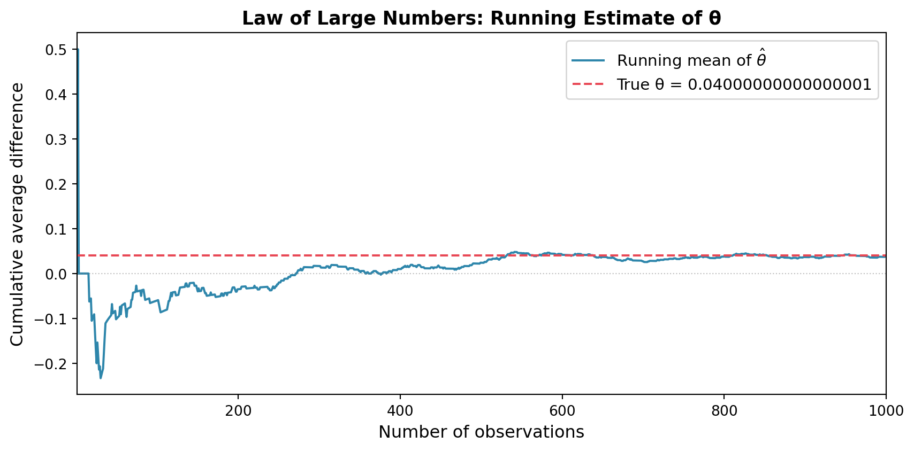
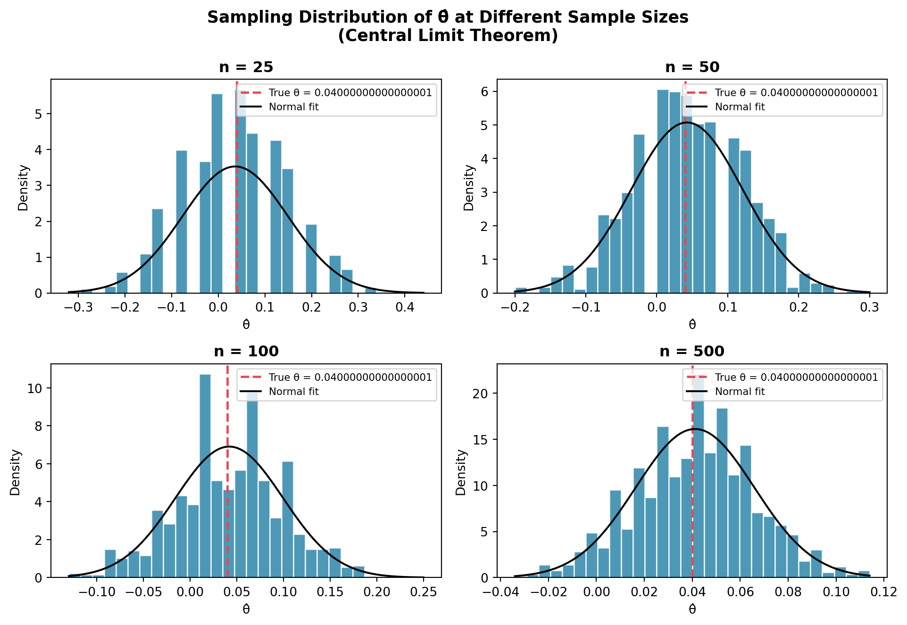

Simulating Key Ideas from Classical Frequentist Statistics
Author
Your Name
Published
April 15, 2026
Introduction
Imagine you run a personal website where visitors can subscribe to your newsletter. On your homepage, there’s a small sign-up box — the wording above it is subtle, but it might matter more than you’d think. You’re considering two different calls to action (CTAs):
CTA A: “Sign up for our newsletter here!”
CTA B: “Stay up to date by signing up!”
Which one actually converts more visitors into subscribers? You could guess, but data is better. That’s where an A/B test comes in.
In an A/B test, incoming visitors are randomly assigned to see one of the two versions. By comparing the sign-up rates between the two groups after collecting enough data, we can make an informed, statistically rigorous decision about which message works better — without being misled by coincidence or our own biases.
In this post, I’ll walk through the statistical machinery behind A/B testing, using simulated data to build intuition for concepts like the Law of Large Numbers, the Bootstrap, the Central Limit Theorem, and hypothesis testing.
The A/B Test as a Statistical Problem
Every visitor who lands on our page either signs up (outcome = 1) or doesn’t (outcome = 0). This is a classic Bernoulli trial: a single binary event with some underlying probability of success.
We model each visitor’s outcome as a draw from a Bernoulli distribution with parameter \(\pi\) — the true probability of signing up. Because the two CTAs might influence behavior differently, we allow this probability to differ between groups:
Visitors who see CTA A sign up with probability \(\pi_A\)
Visitors who see CTA B sign up with probability \(\pi_B\)
The quantity we care about is the difference in sign-up rates: \[\theta = \pi_A - \pi_B\]
If \(\theta > 0\), CTA A is better. If \(\theta < 0\), CTA B wins. If \(\theta = 0\), it doesn’t matter.
Of course, we never observe \(\pi_A\) or \(\pi_B\) directly — we only see the outcomes of our visitors. So we estimate \(\theta\) using the difference in sample proportions: \[\hat\theta = \bar{X}_A - \bar{X}_B = \hat\pi_A - \hat\pi_B\]
where \(\bar{X}_A\) is simply the fraction of CTA A visitors who signed up, and similarly for B. This estimator is intuitive, unbiased, and — as we’ll see — well-behaved as our sample grows.
Simulating Data
In a real A/B test, we wouldn’t know the true values of \(\pi_A\) and \(\pi_B\) — that’s the whole point of running the test! But for the purpose of this exercise, we’ll set the true values ourselves. This lets us study how our estimator behaves when we know the ground truth, which is a powerful way to build statistical intuition.
We’ll set \(\pi_A = 0.22\) and \(\pi_B = 0.18\), so the true difference is \(\theta = 0.04\). We’ll simulate 1,000 visitors for each group.
Our estimate \(\hat\theta \approx 0.04\) — close to the truth, but not exact. That’s expected with any finite sample. Let’s now explore how reliable this estimate really is.
The Law of Large Numbers
The Law of Large Numbers (LLN) tells us that as we collect more data, the sample mean gets closer and closer to the true population mean. In our setting, this means that \(\hat\theta = \bar{X}_A - \bar{X}_B\) will converge to the true \(\theta = 0.04\) as the number of visitors grows. The LLN is what gives us confidence that, with enough data, our estimator won’t be wildly off.
To see this in action, let’s compute the running (cumulative) average of the element-wise differences between our CTA A and CTA B draws, and watch it settle toward 0.04 as the sample size increases.
Code
diffs = data_A - data_Brunning_mean = np.cumsum(diffs) / np.arange(1, n +1)fig, ax = plt.subplots(figsize=(9, 4.5))ax.plot(np.arange(1, n +1), running_mean, color=COLOR_A, linewidth=1.5, label="Running mean of $\\hat{\\theta}$")ax.axhline(theta_true, color=COLOR_B, linewidth=1.5, linestyle="--", label=f"True θ = {theta_true}")ax.axhline(0, color="gray", linewidth=0.8, linestyle=":", alpha=0.5)ax.set_xlabel("Number of observations", fontsize=12)ax.set_ylabel("Cumulative average difference", fontsize=12)ax.set_title("Law of Large Numbers: Running Estimate of θ", fontsize=13, fontweight="bold")ax.legend(fontsize=11)ax.set_xlim(1, n)plt.tight_layout()plt.show()

The running mean of the estimated difference converges toward the true value of 0.04 as sample size grows — a direct demonstration of the Law of Large Numbers.
The plot tells a clear story: at the start, when we only have a handful of visitors, our running estimate bounces around erratically — it might even be negative at times! But as the sample grows, the noise averages out and the estimate stabilizes near the true value of 0.04. This is the LLN in action. It’s the mathematical guarantee that, with a large enough experiment, we’ll get a reliable answer.
Bootstrap Standard Errors
Knowing that our estimate is close to the truth on average is reassuring, but it doesn’t tell us how precise it is for any single experiment. To communicate our uncertainty, we want a confidence interval — a range of values that, under repeated sampling, would contain the true \(\theta\) 95% of the time.
The bootstrap is a clever resampling technique that lets us estimate the variability of our statistic without needing a closed-form formula. The idea is simple: we treat our observed data as a stand-in for the population, and we repeatedly resample from it (with replacement) to simulate what would happen if we ran the experiment many times. The spread of the resulting estimates tells us how variable our statistic is.
Code
B =1000# number of bootstrap resamplesboot_estimates = np.empty(B)for i inrange(B): resample_A = np.random.choice(data_A, size=n, replace=True) resample_B = np.random.choice(data_B, size=n, replace=True) boot_estimates[i] = resample_A.mean() - resample_B.mean()# Bootstrapped standard errorse_bootstrap = boot_estimates.std()# Analytical standard errorpi_hat_A = data_A.mean()pi_hat_B = data_B.mean()se_analytical = np.sqrt(pi_hat_A * (1- pi_hat_A) / n + pi_hat_B * (1- pi_hat_B) / n)# 95% CI using bootstrapped SEci_lower = theta_hat -1.96* se_bootstrapci_upper = theta_hat +1.96* se_bootstrapprint(f"Estimated θ̂: {theta_hat:.4f}")print(f"Bootstrap SE: {se_bootstrap:.4f}")print(f"Analytical SE: {se_analytical:.4f}")print(f"95% CI (bootstrap): [{ci_lower:.4f}, {ci_upper:.4f}]")
The bootstrapped and analytical standard errors are nearly identical — this is reassuring, and it confirms that the bootstrap is working correctly. Our 95% confidence interval tells us: given our data, we are 95% confident that the true difference in sign-up rates lies somewhere in that range. If the interval excludes 0, that’s evidence that the two CTAs really do perform differently.
The Central Limit Theorem
We’ve seen that our estimator converges to the truth (LLN) and we’ve quantified its variability (bootstrap). But what shape does the distribution of \(\hat\theta\) take? This is where the Central Limit Theorem (CLT) enters.
The CLT says that regardless of the shape of the underlying distribution — and Bernoulli outcomes are about as non-Normal as you can get — the sampling distribution of the sample mean approaches a Normal distribution as the sample size grows. Since \(\hat\theta\) is a difference of two sample means, it too becomes approximately Normal for large \(n\).
Let’s verify this by repeating the experiment 1,000 times at four different sample sizes.

As sample size increases, the sampling distribution of θ̂ becomes increasingly bell-shaped — the Central Limit Theorem in action.
At \(n = 25\), the histogram looks rough and somewhat irregular — we’re working with very little data, so randomness dominates. By \(n = 100\), a bell shape is clearly visible, and by \(n = 500\), the distribution is strikingly Normal, tightly centered on the true \(\theta = 0.04\). This is the CLT at work: regardless of the binary nature of our outcomes, enough averaging produces Normality. This result is what makes formal hypothesis testing possible.
Hypothesis Testing
Now we can put the CLT to work. We want to formally test whether the two CTAs produce different sign-up rates, or whether any observed difference could be explained by chance alone.
We set up the following hypotheses: - \(H_0\): \(\theta = 0\) (the two CTAs perform equally) - \(H_1\): \(\theta \neq 0\) (there is a real difference)
By the CLT, \(\hat\theta\) is approximately Normal for large samples. Under \(H_0\), its mean is 0. To test \(H_0\), we standardize\(\hat\theta\) to obtain a test statistic:
\[z = \frac{\hat\theta - 0}{SE(\hat\theta)}\]
Why standardize? Because dividing a Normal random variable by its standard deviation gives a standard Normal \(N(0,1)\). Under \(H_0\), \(z \dot\sim N(0,1)\), and we know exactly how extreme a \(z\)-value needs to be to be surprising. This lets us compute a p-value: the probability of observing a \(|z|\) this large or larger, if \(H_0\) were true.
A note on terminology: you may have heard this called a “t-test.” The classical t-test arises when data are drawn from a Normal distribution and the variance is estimated from the data — the ratio then follows an exact t-distribution. Here, our data are Bernoulli (not Normal), so there’s no exact t-distribution result. The CLT gives us approximate Normality, so we’re really running a z-test. In practice, for large samples the t-distribution and the standard Normal are nearly indistinguishable, so the distinction rarely matters — but it’s worth understanding why.
Code
z_stat = theta_hat / se_analyticalp_value =2* (1- stats.norm.cdf(abs(z_stat)))print(f"Estimated θ̂: {theta_hat:.4f}")print(f"Standard Error: {se_analytical:.4f}")print(f"z-statistic: {z_stat:.4f}")print(f"p-value: {p_value:.4f}")if p_value <0.05:print("\n→ We reject H₀ at α = 0.05. There is significant evidence of a difference.")else:print("\n→ We fail to reject H₀ at α = 0.05.")
Estimated θ̂: 0.0380
Standard Error: 0.0178
z-statistic: 2.1388
p-value: 0.0325
→ We reject H₀ at α = 0.05. There is significant evidence of a difference.
With \(p < 0.05\), we have statistically significant evidence that CTA A and CTA B produce different sign-up rates. Of course, we know the truth here (since we simulated it), so this is a good sanity check — our test correctly detected the real difference of 0.04.
The T-Test as a Regression
Here’s an elegant fact: the two-sample test we just ran is mathematically equivalent to a simple linear regression. This connection matters because regression is a far more flexible framework — it can accommodate additional covariates, interactions, and multiple treatment arms, all while producing the same inference in the simple case.
The setup: stack all observations into one dataset with two columns: - \(Y_i\): did visitor \(i\) sign up? (1 or 0) - \(D_i\): did visitor \(i\) see CTA A? (1 = CTA A, 0 = CTA B)
Then fit: \[Y_i = \beta_0 + \beta_1 D_i + \varepsilon_i\]
The interpretation of the coefficients falls out naturally: 1. When \(D_i = 0\) (CTA B group): \(E[Y_i] = \beta_0 = \pi_B\) 2. When \(D_i = 1\) (CTA A group): \(E[Y_i] = \beta_0 + \beta_1 = \pi_A\) 3. Therefore \(\beta_1 = \pi_A - \pi_B = \theta\)
The OLS estimate \(\hat\beta_1\) is numerically identical to \(\hat\theta = \bar{X}_A - \bar{X}_B\).
The estimates and p-values are virtually identical across the two methods. The minor difference in standard errors reflects the fact that OLS assumes a pooled residual variance, while the two-sample formula uses separate variance estimates for each group — a distinction that becomes negligible for large, balanced samples.
Why does this equivalence matter? Because once you’ve framed your A/B test as a regression, you can immediately extend it: add user demographics as controls, include interaction terms to study heterogeneous treatment effects, or add more CTA variants. The regression framework handles all of this seamlessly.
The Problem with Peeking
So far, we’ve been disciplined: we collected all 1,000 observations per group and ran the test once. But what if your boss is impatient?
Suppose she checks the results after every 100 visitors per group — peeking at \(n = 100, 200, \ldots, 1000\) — and plans to declare a winner the moment any peek yields a significant result at \(\alpha = 0.05\).
This sounds reasonable but is actually a serious statistical mistake. A single test at \(\alpha = 0.05\) has a 5% false positive rate: even when there is no real difference, we’ll incorrectly reject \(H_0\) in 5% of experiments. But each additional peek is another roll of the dice. Across 10 peeks, the probability of getting at least one false positive is much higher than 5%.
Let’s quantify exactly how much higher with a simulation.
Code
n_experiments =10_000peek_intervals =list(range(100, 1001, 100))false_positives =0for _ inrange(n_experiments):# H0 is TRUE: both groups have same sign-up rate draws_A = np.random.binomial(1, 0.20, n) draws_B = np.random.binomial(1, 0.20, n) significant =Falsefor k in peek_intervals: sub_A = draws_A[:k] sub_B = draws_B[:k] diff = sub_A.mean() - sub_B.mean() pi_a, pi_b = sub_A.mean(), sub_B.mean() se = np.sqrt(pi_a*(1-pi_a)/k + pi_b*(1-pi_b)/k)if se ==0:continue z = diff / se p =2* (1- stats.norm.cdf(abs(z)))if p <0.05: significant =Truebreakif significant: false_positives +=1empirical_fpr = false_positives / n_experimentsprint(f"Nominal false positive rate (single test): 5.00%")print(f"Empirical false positive rate (10 peeks): {empirical_fpr*100:.1f}%")
Peeking inflates the false positive rate far beyond the nominal 5% level.
The results are striking. While a single test has a 5% false positive rate by design, peeking 10 times inflates this to roughly 25–30%. In other words, even when there’s no real difference between the CTAs, an impatient analyst who peeks frequently will declare a winner about one-quarter of the time — purely by chance.
This is a well-known failure mode of classical frequentist testing known as p-hacking or multiple comparisons inflation. It’s not academic: companies that monitor A/B tests in real time and stop early when they see a “significant” result will systematically over-report winners that don’t really exist.
The fix? Decide on your sample size before the experiment, run it to completion, and test once. If you truly need early stopping, use methods designed for it — like sequential testing or group sequential designs — that properly control the false positive rate across multiple looks.